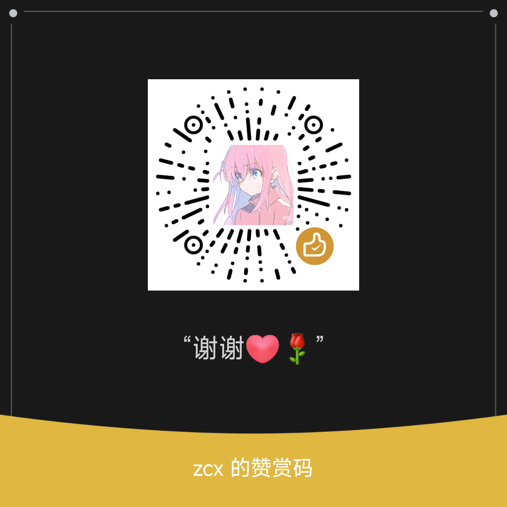

2025-2026 学年第二学期 · 知识点总结与例题精讲
随机事件与概率、随机变量及其分布、多维随机变量、数字特征、大数定律与中心极限定理、参数估计、假设检验。含完整例题解答和易错点汇总。
操作系统概述、处理器管理（进程/调度/PV 操作/死锁）、存储管理（分页/分段/页面置换）、设备管理、文件系统。含交互式算法演示。
算法概述、分治法、动态规划、贪心算法、回溯法、分支限界法。含算法可视化演示与经典例题详解。
离散时间信号与系统、Z 变换、DFT/FFT、数字滤波器设计。含蝶形运算图解与互动练习。
唯物辩证法、认识论、唯物史观、资本主义本质与规律、社会主义发展。含互动复习与知识卡片。
常微分方程、多元函数微分（偏导/复合函数/极值）、多元积分（重积分/格林公式/高斯公式）、复变函数（可导性/柯西积分公式）。
发现错误、缺少内容、或有改进建议？欢迎通过以下方式反馈：
✨ 欢迎来到期末复习笔记
如果这份笔记对你有帮助，可以请作者喝杯咖啡 ☕

微信扫码赞赏
「残忍拒绝」后不再显示